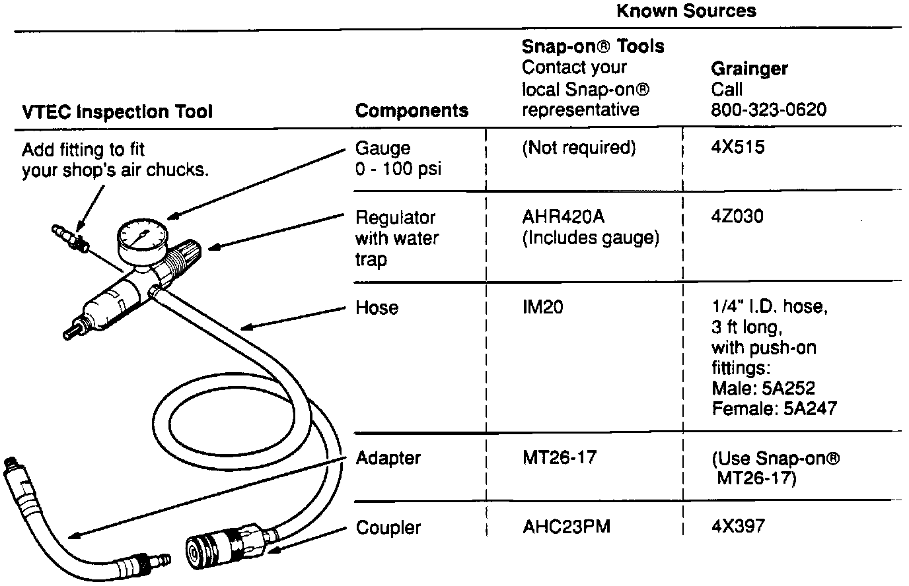

Regulator W/ Press. Gauge, Hose and Adapter (VTEC Inspect Tool)

This tool is not available from American Honda. You must purchase its components from local sources. The tool is used to check the rocker arms (VTEC system) on the NSX engine. Use it with VTEC Plug 07MAJ-PR7020A that was automatically shipped.
[ ] Write "See Tool Service Bulletin 90-017" on page 6-53, step 2 in your NSX Service Manual.